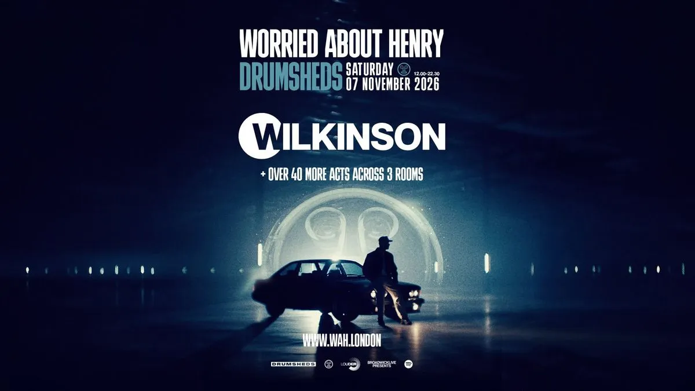

L'affiche officielle du 7 novembre · © Worried About Henry
+40
artistes
3
rooms
07 nov
Drumsheds · Londres
Worried About Henry, douze ans à convertir le Royaume-Uni
Si vous suivez la scène drum & bass britannique de loin, le nom vous aura forcément traversé un fil Instagram sans que vous sachiez vraiment à quoi il correspond. Worried About Henry, ou WAH pour ceux qui y vont tous les mois, naît à Liverpool en 2014 avec l'ambition modeste de faire tourner du dnb dans les clubs du nord de l'Angleterre. Douze ans plus tard, la structure programme dans plus de vingt villes du pays, opère sous la bannière Louder Entertainment, et a raflé le titre de Best Club Event aux Best of British Awards 2023 du DJ Mag.
Le parcours ressemble à un manuel de croissance bien tenue. Des résidences club dans les salles Academy Music Group, des takeovers de stage à Parklife, un rendez-vous annuel avec The Warehouse Project à Manchester, une résidence à Ibiza, une extension à Malte, et depuis quelques saisons un festival maison, WAH In The City, planté sur Silverworks Island à l'est de Londres. En juillet dernier, cette édition 2026 a été headlinée par Pendulum en live et Andy C. On parle d'un promoteur qui a fait jouer Chase & Status, Shy FX, Sub Focus, Hybrid Minds et Dimension sous son propre logo.
Drumsheds : 15 000 places dans un ancien magasin de meubles
Le lieu mérite un paragraphe à lui seul, parce qu'il fait partie de l'attraction. Drumsheds occupe les 608 000 pieds carrés de l'ancien IKEA de Tottenham, à Edmonton, fermé en 2022 puis récupéré par Broadwick Live qui en a fait la plus grande salle de nuit de Londres. Quinze mille personnes, trois halls baptisés sobrement X, Y et Z, des plafonds de hangar et une acoustique de warehouse assumée. La salle a ouvert en octobre 2023 et est devenue en deux saisons le passage obligé des grosses productions électroniques de la capitale.
Pour un média qui filme, c'est un terrain de jeu à part. Il n'y a pas de coucher de soleil sur la mer ni de pinède comme au Family Piknik, juste du béton, du brouillard de machine et des murs de lumière. C'est exactement le genre de contraste qu'on cherchait après un été passé à filmer en extérieur dans le Sud.
Quatre sold out d'affilée dans la même salle
WAH et Drumsheds, c'est une histoire qui se répète depuis 2023 et qui explique pourquoi cette date compte. La première, en novembre 2023, était annoncée comme le plus gros indoor de leur histoire : Andy C en tête, entouré de Sub Focus, Bou, Kanine et Kings Of The Rollers, sur les trois rooms. Complet.
L'année suivante, le collectif fête ses dix ans au même endroit avec Hybrid Minds en clôture et une affiche qui balaie tout le spectre, du liquid le plus mélodique au jump up le plus brutal, avec Sigma, Serum et S.P.Y dans le lot. Puis en octobre 2025, Dimension signe son premier headline londonien depuis la Wembley Arena, accompagné de Netsky, Friction, Metrik, Camo & Krooked, A.M.C, Technimatic, DRS et LSB. À ce jour, les quatre dernières éditions se sont vendues intégralement. La cinquième est en général celle où les billets partent avant même l'annonce complète du line-up.
L'édition 2025 avec Dimension, Netsky, Friction et A.M.C · © Worried About Henry
Wilkinson, quinze ans de tubes et un cinquième album
Mark Wilkinson fait partie de cette génération de producteurs londoniens qui ont sorti le drum & bass des raves pour le poser dans les charts sans le trahir. Formé chez Ram Records et Hospital, deux labels qui ne se ressemblent pas et qui expliquent assez bien son grand écart entre rouleau compresseur et mélodie, il explose en 2013 avec "Afterglow" et la voix de Becky Hill. Le morceau grimpe à la huitième place des charts britanniques, décroche un triple disque de platine, et devient l'un des rares titres dnb que tout le monde connaît sans savoir que c'en est.
Suivent "Half Light", "Dirty Love", trois albums solo, un projet commun avec Sub Focus, et la création de son propre label Sleepless Music en 2021. Cette année, il publie Infinity, son cinquième disque, quatorze titres qui tirent d'un côté vers le dancefloor le plus direct et de l'autre vers des textures nettement plus expérimentales. Une tournée massive va avec : Tomorrowland, Boomtown, Pukkelpop. Le voir défendre ce répertoire dans la room principale d'une salle de quinze mille personnes, c'est le format pour lequel cette musique a été écrite.
Quarante et quelques noms encore cachés, onze heures de son, une salle qui a déjà affiché complet quatre fois de suite. Le drum & bass britannique ne fait pas semblant.
Ce qu'on attend du line-up
À l'heure où on écrit ces lignes, l'affiche ne dit qu'une chose : Wilkinson, plus de quarante autres artistes, trois rooms. Le reste tombera par phases, comme toujours chez WAH, avec une préinscription pour la prévente. L'historique donne quand même une idée assez précise de la mécanique : une room principale pour les têtes d'affiche et le dancefloor grand format, une deuxième pour le jump up et les labels les plus rugueux façon Born On Road, une troisième réservée au liquid, au roller et aux sélections plus fines du genre Technimatic ou LSB.
C'est ce découpage qui rend l'exercice intéressant à filmer. Passer en quelques minutes d'un mur de basses devant quinze mille personnes à un set de liquid dans une salle de mille, c'est le genre de contraste qui raconte une scène bien mieux qu'un long discours. Et pour un média français qui couvre la bass music, mettre les pieds dans le plus gros indoor dnb du Royaume-Uni relève presque du pèlerinage.
Le Drum & Bass Release Radar, la playlist entretenue par WAH · © Worried About Henry
Infos pratiques
On y sera
Après le Sónar en juin et le Family Piknik début août, on referme l'été pour ouvrir un chapitre nettement plus sombre et plus rapide. C'est acté, on y va, et l'idée d'aller filmer une journée entière de drum & bass dans un ancien magasin de meubles du nord de Londres nous excite plus qu'on ne veut bien l'admettre. On vous ramènera des images, des sets, et probablement quelques tympans en moins.
Rendez-vous le 7 novembre à Drumsheds. D'ici là, on attend les quarante noms manquants comme tout le monde.